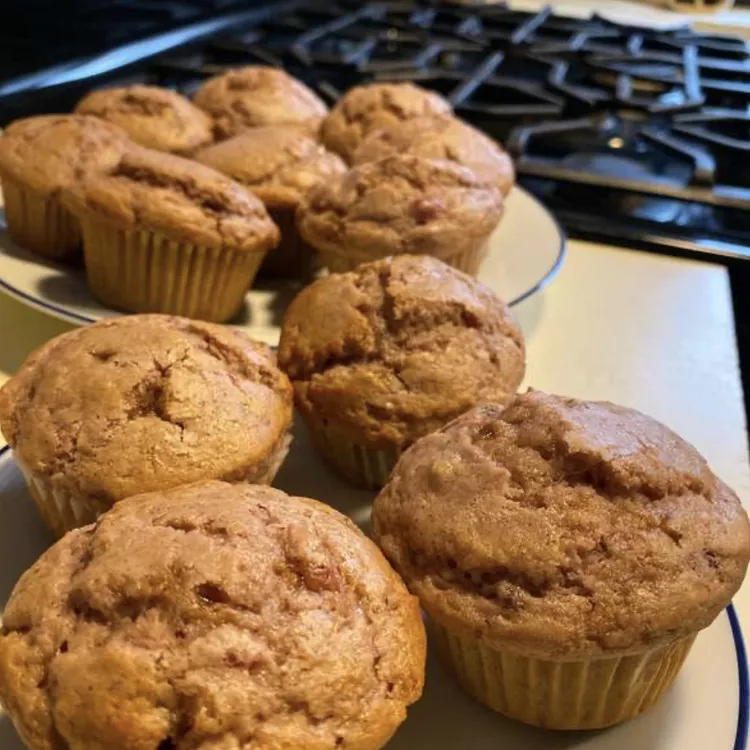

Cranberry Sauce Muffins

Description
These leftover cranberry sauce muffins are the perfect way to make the most of every last bit of your Thanksgiving meal.
Ingredients
- 2 cups all-purpose flour
- ½ cup packed brown sugar
- ¼ cup white sugar
- 1 tablespoon baking powder
- ½ teaspoon ground cinnamon
- ½ teaspoon ground cardamom
- ½ teaspoon salt
- 1 cup leftover cranberry sauce
- ¾ cup milk
- ¼ cup vegetable oil
- 1 large egg, slightly beaten
- 1 teaspoon vanilla extract
Steps
- Preheat the oven to 400 degrees F (200 degrees C). Line 18 muffin cups with paper liners.
- Beat cranberry sauce, milk, oil, egg, and vanilla together in a bowl until well combined.
- Whisk flour, brown sugar, white sugar, baking powder, cinnamon, cardamom, and salt together in a separate bowl.
- Stir dry ingredients into wet ingredients until batter is just moistened. Pour into the prepared muffin cups.
- Bake in the preheated oven until golden brown, about 20 minutes.